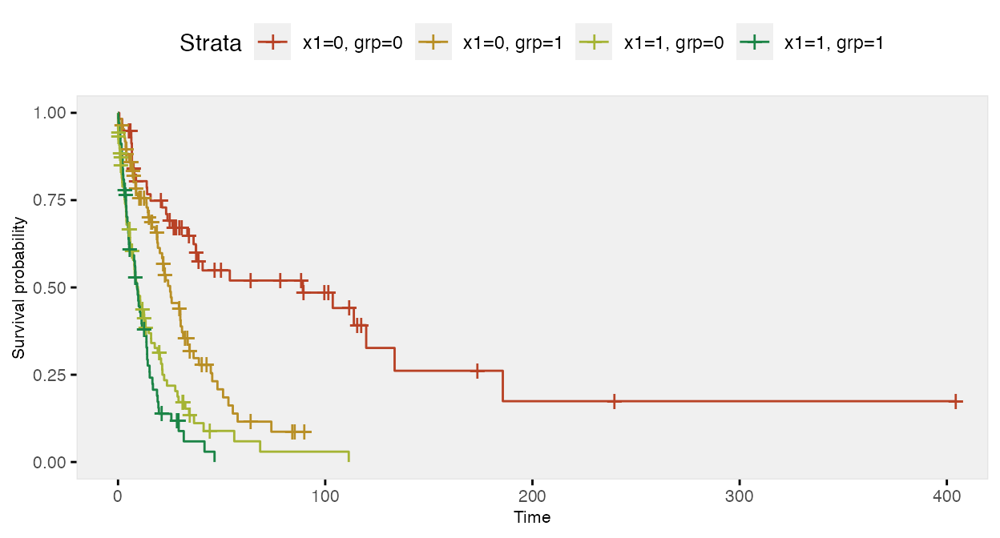
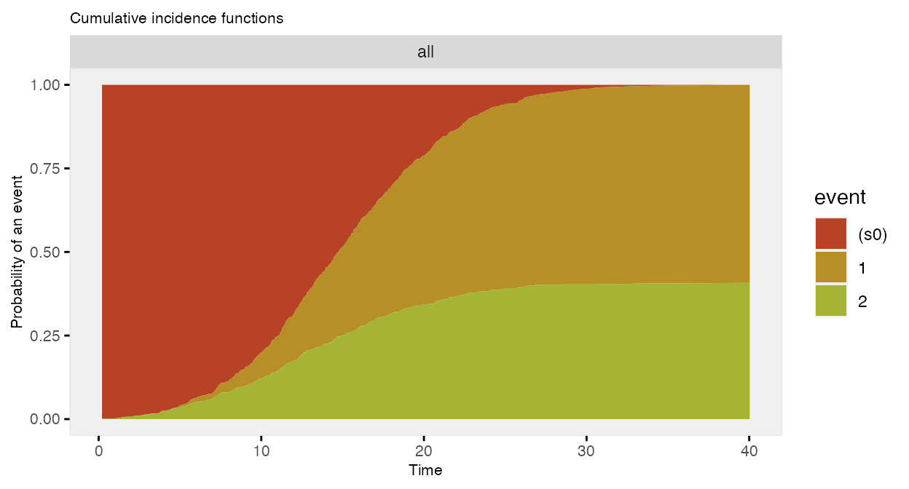
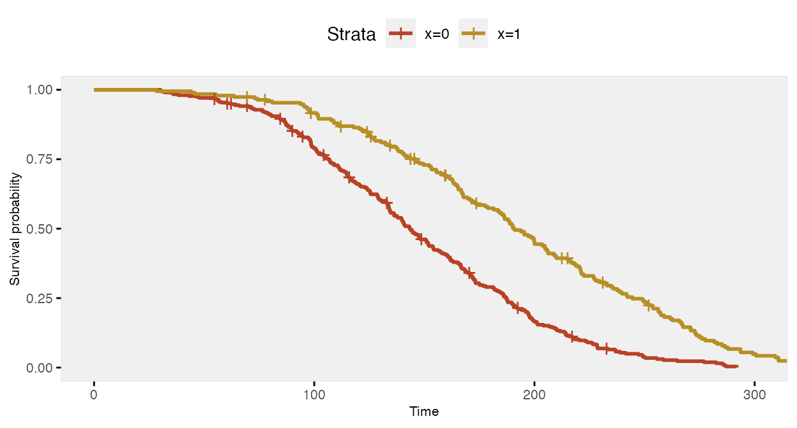
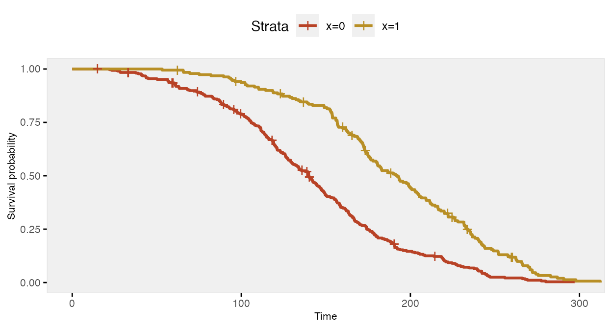
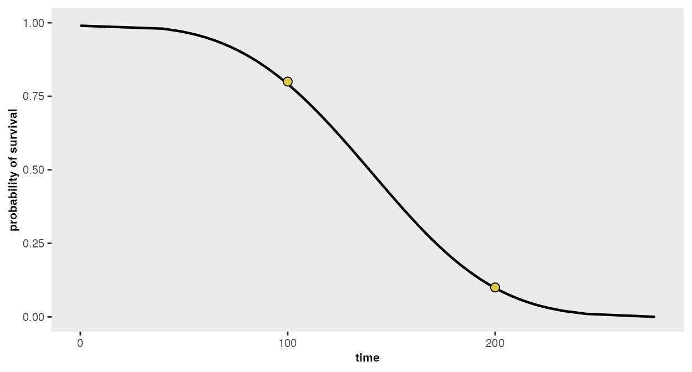
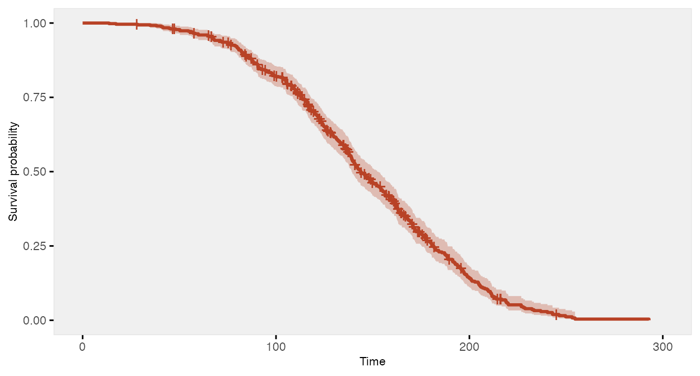

Time-to-event data, including both survival and censoring times, are
created using functions defSurv and genSurv.
The survival data definitions require a variable name as well as a
specification of a scale value, which determines the mean survival time
at a baseline level of covariates (i.e. all covariates set to 0). The
Weibull distribution is used to generate these survival times. In
addition, covariates (which have been defined previously) that influence
survival time can be included in the formula field.
Positive coefficients are associated with longer survival times (and
lower hazard rates). Finally, the shape of the distribution can
be specified. A shape value of 1 reflects the
exponential distribution. As of simstudy version
0.5.0, it is also possible to generate survival data that violate a
proportional hazards assumption. In addition, data with two or more
competing risks can be generated.
The density, mean, and variance of the Weibull distribution that is used in the data generation process are defined by the parameters (scale) and (shape) as shown below.
The survival time data are generated based on this formula:
where is a uniform random variable between 0 and 1, is a vector of parameters in a Cox proportional hazard model, and is a vector of covariates that impact survival time. and can also vary by covariates.
Here is an example showing how to generate data with covariates. In this case the scale and shape parameters will vary by group membership.
# Baseline data definitions
def <- defData(varname = "x1", formula = 0.5, dist = "binary")
def <- defData(def, varname = "grp", formula = 0.5, dist = "binary")
# Survival data definitions
set.seed(282716)
sdef <- defSurv(varname = "survTime", formula = "1.5*x1", scale = "grp*50 + (1-grp)*25",
shape = "grp*1 + (1-grp)*1.5")
sdef <- defSurv(sdef, varname = "censorTime", scale = 80, shape = 1)
sdef## varname formula scale shape transition
## <char> <char> <char> <char> <num>
## 1: survTime 1.5*x1 grp*50 + (1-grp)*25 grp*1 + (1-grp)*1.5 0
## 2: censorTime 0 80 1 0The data are generated with calls to genData and
genSurv:
# Baseline data definitions
dtSurv <- genData(300, def)
dtSurv <- genSurv(dtSurv, sdef)
head(dtSurv)## Key: <id>
## id x1 grp survTime censorTime
## <int> <int> <int> <num> <num>
## 1: 1 0 0 49.126 14.729
## 2: 2 0 1 48.229 27.742
## 3: 3 0 1 89.858 228.703
## 4: 4 1 1 25.361 118.098
## 5: 5 1 0 56.409 325.796
## 6: 6 0 1 21.310 12.995## Key: <grp, x1>
## grp x1 V1
## <int> <int> <num>
## 1: 0 0 141.6
## 2: 0 1 19.5
## 3: 1 0 51.6
## 4: 1 1 11.5Observed survival times and censoring indicators can be generated using the competing risk functionality and specifying a censoring variable:
dtSurv <- genData(300, def)
dtSurv <- genSurv(dtSurv, sdef, timeName = "obsTime", censorName = "censorTime",
eventName = "status", keepEvents = TRUE)
head(dtSurv)## Key: <id>
## id x1 grp survTime censorTime obsTime status type
## <int> <int> <int> <num> <num> <num> <num> <char>
## 1: 1 0 1 57.730 78.513 57.730 1 survTime
## 2: 2 1 0 5.707 124.698 5.707 1 survTime
## 3: 3 1 1 38.798 29.006 29.006 0 censorTime
## 4: 4 0 0 7.872 17.986 7.872 1 survTime
## 5: 5 0 0 23.873 150.881 23.873 1 survTime
## 6: 6 1 0 2.099 4.176 2.099 1 survTime
# estimate proportion of censoring by x1 and group
dtSurv[, round(1 - mean(status), 2), keyby = .(grp, x1)]## Key: <grp, x1>
## grp x1 V1
## <int> <int> <num>
## 1: 0 0 0.48
## 2: 0 1 0.19
## 3: 1 0 0.33
## 4: 1 1 0.13Here is a Kaplan-Meier plot of the data by the four groups:

Here is a survival analysis (using a Cox proportional hazard model) of a slightly simplified data set with two baseline covariates only:
# Baseline data definitions
def <- defData(varname = "x1", formula = 0.5, dist = "binary")
def <- defData(def, varname = "x2", formula = 0.5, dist = "binary")
# Survival data definitions
sdef <- defSurv(varname = "survTime", formula = "1.5*x1 - .8*x2", scale = 50, shape = 1/2)
sdef <- defSurv(sdef, varname = "censorTime", scale = 80, shape = 1)
dtSurv <- genData(300, def)
dtSurv <- genSurv(dtSurv, sdef, timeName = "obsTime", censorName = "censorTime",
eventName = "status")
coxfit <- survival::coxph(Surv(obsTime, status) ~ x1 + x2, data = dtSurv)The 95% confidence intervals of the parameter estimates include the values used to generate the data:
| Characteristic | log(HR) | 95% CI | p-value |
|---|---|---|---|
| x1 | 1.3 | 1.0, 1.6 | <0.001 |
| x2 | -0.82 | -1.1, -0.57 | <0.001 |
| Abbreviations: CI = Confidence Interval, HR = Hazard Ratio | |||
In the previous example, we actually used the competing risk
mechanism in genSurv to generate an observed time variable
(which was the earliest of the censoring and event time). This is done
by specifying a timeName argument that will represent the
observed time value. The event status is indicated in the field set by
the eventName argument (which defaults to “event”). If a
variable name is indicated in the censorName argument, the
censored events automatically have a value of 0. As we saw above,
competing risk information can be generated as part of
genSurv. However, there is an additional function
addCompRisk that will generate the competing risk
information using an existing data set. The example here will take that
approach.
d1 <- defData(varname = "x1", formula = .5, dist = "binary")
d1 <- defData(d1, "x2", .5, dist = "binary")
dS <- defSurv(varname = "event_1", formula = "-10 - 0.6*x1 + 0.4*x2", shape = 0.3)
dS <- defSurv(dS, "event_2", "-6.5 + 0.3*x1 - 0.5*x2", shape = 0.5)
dS <- defSurv(dS, "censor", "-7", shape = 0.55)
dtSurv <- genData(1001, d1)
dtSurv <- genSurv(dtSurv, dS)
dtSurv## Key: <id>
## id x1 x2 event_1 event_2 censor
## <int> <int> <int> <num> <num> <num>
## 1: 1 1 1 20.580 21.335 32.249
## 2: 2 0 0 15.441 10.069 12.795
## 3: 3 0 0 16.244 44.746 33.273
## 4: 4 0 1 9.041 18.339 54.840
## 5: 5 1 0 15.509 48.698 26.304
## ---
## 997: 997 1 0 29.679 17.158 29.725
## 998: 998 0 1 13.473 20.445 76.634
## 999: 999 1 1 20.888 15.910 79.379
## 1000: 1000 1 1 19.022 21.678 49.250
## 1001: 1001 0 0 21.982 18.561 58.893
dtSurv <- addCompRisk(dtSurv, events = c("event_1", "event_2", "censor"),
timeName = "time", censorName = "censor")
dtSurv## Key: <id>
## Index: <type>
## id x1 x2 time event type
## <int> <int> <int> <num> <num> <char>
## 1: 1 1 1 20.580 1 event_1
## 2: 2 0 0 10.069 2 event_2
## 3: 3 0 0 16.244 1 event_1
## 4: 4 0 1 9.041 1 event_1
## 5: 5 1 0 15.509 1 event_1
## ---
## 997: 997 1 0 17.158 2 event_2
## 998: 998 0 1 13.473 1 event_1
## 999: 999 1 1 15.910 2 event_2
## 1000: 1000 1 1 19.022 1 event_1
## 1001: 1001 0 0 18.561 2 event_2The competing risk data can be plotted using the cumulative incidence functions (rather than the survival curves):

The data generation can all be done in two (instead of three) steps:
dtSurv <- genData(101, d1)
dtSurv <- genSurv(dtSurv, dS, timeName = "time", censorName = "censor")
dtSurv## Key: <id>
## Index: <type>
## id x1 x2 time event type
## <int> <int> <int> <num> <num> <char>
## 1: 1 1 0 4.641 0 censor
## 2: 2 0 0 15.421 1 event_1
## 3: 3 0 1 14.629 1 event_1
## 4: 4 0 1 15.403 1 event_1
## 5: 5 1 1 20.851 1 event_1
## ---
## 97: 97 1 0 15.650 2 event_2
## 98: 98 0 0 20.353 2 event_2
## 99: 99 1 0 21.974 2 event_2
## 100: 100 0 0 7.428 2 event_2
## 101: 101 0 0 16.215 2 event_2In the standard simstudy data generation process for
survival/time-to-event outcomes that includes covariates that effect the
hazard rate at various time points, the ratio of hazards comparing
different levels of a covariate are constant across all time points. For
example, if we have a single binary covariate
,
the hazard
at time
is
where is a baseline hazard when . The ratio of the hazards for compared to is
so the log of the hazard ratio is a constant , and the hazard ratio is always .
However, we may not always want to make the assumption that the hazard ratio is constant over all time periods. To facilitate this, it is possible to specify two different data definitions for the same outcome, using the transition field to specify when the second definition replaces the first. (While it would theoretically be possible to generate data for more than two periods, the process is more involved, and has not been implemented at this time.)
Constant/proportional hazard ratio
To start, here is an example assuming a constant log hazard ratio of -0.7:
def <- defData(varname = "x", formula = 0.4, dist = "binary")
defS <- defSurv(varname = "death", formula = "-14.6 - 0.7*x", shape = 0.35)
defS <- defSurv(defS, varname = "censor", scale = exp(13), shape = 0.5)
dd <- genData(500, def)
dd <- genSurv(dd, defS, digits = 2, timeName = "time", censorName = "censor")
fit <- survfit(Surv(time, event) ~ x, data = dd)
The Cox proportional hazards model recovers the correct log hazards rate:
coxfit <- coxph(formula = Surv(time, event) ~ x, data = dd)| Characteristic | log(HR) | 95% CI | p-value |
|---|---|---|---|
| x | -0.78 | -0.98, -0.59 | <0.001 |
| Abbreviations: CI = Confidence Interval, HR = Hazard Ratio | |||
We can test the assumption of proportional hazards using weighted residuals. If the , then we would conclude that the assumption of proportional hazards is not warranted. In this case , so the model is apparently reasonable:
cox.zph(coxfit)## chisq df p
## x 0.966 1 0.33
## GLOBAL 0.966 1 0.33Non-constant/non-proportional hazard ratio
In this next case, the risk of death when is lower at all time points compared to when , but the relative risk (or hazard ratio) changes at 150 days:
def <- defData(varname = "x", formula = 0.4, dist = "binary")
defS <- defSurv(varname = "death", formula = "-14.6 - 1.3*x", shape = 0.35, transition = 0)
defS <- defSurv(defS, varname = "death", formula = "-14.6 - 0.4*x", shape = 0.35,
transition = 150)
defS <- defSurv(defS, varname = "censor", scale = exp(13), shape = 0.5)
dd <- genData(500, def)
dd <- genSurv(dd, defS, digits = 2, timeName = "time", censorName = "censor")
fit <- survfit(Surv(time, event) ~ x, data = dd)The survival curve for the sample with has a slightly different shape under this data generation process compared to the previous example under a constant hazard ratio assumption; there is more separation early on (prior to day 150), and then the gap is closed at a quicker rate.

If we ignore the possibility that there might be a different relationship over time, the Cox proportional hazards model gives an estimate of the log hazard ratio quite close to -0.70:
coxfit <- survival::coxph(formula = Surv(time, event) ~ x, data = dd)| Characteristic | log(HR) | 95% CI | p-value |
|---|---|---|---|
| x | -0.78 | -0.97, -0.59 | <0.001 |
| Abbreviations: CI = Confidence Interval, HR = Hazard Ratio | |||
However, further inspection of the proportionality assumption should make us question the appropriateness of the model. Since , we would be wise to see if we can improve on the model.
cox.zph(coxfit)## chisq df p
## x 17.4 1 3e-05
## GLOBAL 17.4 1 3e-05We might be able to see from the plot where proportionality diverges, in which case we can split the data set into two parts at the identified time point. (In many cases, the transition point or points won’t be so obvious, in which case the investigation might be more involved.) By splitting the data at day 150, we get the desired estimates:
dd2 <- survSplit(Surv(time, event) ~ ., data= dd, cut=c(150),
episode= "tgroup", id="newid")
coxfit2 <- survival::coxph(Surv(tstart, time, event) ~ x:strata(tgroup), data=dd2)| Characteristic | log(HR) | 95% CI | p-value |
|---|---|---|---|
| x * strata(tgroup) | |||
| x * tgroup=1 | -1.5 | -1.8, -1.1 | <0.001 |
| x * tgroup=2 | -0.40 | -0.65, -0.15 | 0.002 |
| Abbreviations: CI = Confidence Interval, HR = Hazard Ratio | |||
And the diagnostic test of proportionality confirms the appropriateness of the model:
cox.zph(coxfit2)## chisq df p
## x:strata(tgroup) 1.02 2 0.6
## GLOBAL 1.02 2 0.6Throughout this vignette, I have been using various assumptions for
the parameters - formula, scale, and shape -
that define the Weibull-based survival distribution. Where do these
assumptions come from and how can we determine what is appropriate to
use in our simulations? That will depend, of course, on each specific
application and use of the simulation, but there are two helper
functions in simstudy, survGetParams and
survParamPlot, that are intended to guide the process.
survGetParams will provide the formula and
shape parameters (the scale parameter will always be
set to 1) that define a curve close to points provided as inputs. For
example, if we would like to find the parameters for a distribution
where 80% survive until day 100, and 10% survive until day 200 (any
number of points may be provided):
points <- list(c(100, 0.80), c(200, 0.10))
r <- survGetParams(points)
r## [1] -17.0065167 0.2969817We can visualize the curve that is defined by these parameters:
survParamPlot(f = r[1], shape = r[2], points)
And we can generate data based on these parameters:
defS <- defSurv(varname = "death", formula = -17, scale = 1, shape = 0.3)
defS <- defSurv(defS, varname = "censor", formula = 0, scale = exp(18.5), shape = 0.3)
dd <- genData(500)
dd <- genSurv(dd, defS, timeName = "time", censorName = "censor")